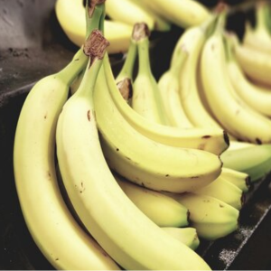

Banana Nanica

Nome:
Banana Nanica
Preço unidade:
R$2,98
Fornecedor:
VM Hortifruti
Código:
7453
Peso aproximado:
200g
Descrição:
A banana nanica, também conhecida como banana d'água, é uma variedade de banana amplamente apreciada por sua doçura e textura cremosa. Originária do Brasil, essa fruta é facilmente reconhecida por sua casca amarela com manchas escuras características, que indicam seu amadurecimento.
A banana nanica é famosa por sua polpa macia e suculenta, que derrete na boca ao ser consumida. Sua doçura natural é mais pronunciada do que em outras variedades de banana, tornando-a uma escolha popular para lanches rápidos, sobremesas e receitas de panificação.
Além de seu sabor irresistível, a banana nanica é uma excelente fonte de nutrientes essenciais, como potássio, vitamina C e fibras dietéticas. O potássio presente na banana nanica desempenha um papel importante na regulação da pressão arterial e na saúde do coração, enquanto a vitamina C fortalece o sistema imunológico e as fibras auxiliam na digestão.
Versátil e nutritiva, a banana nanica pode ser consumida crua, adicionada a smoothies, vitaminas e saladas de frutas, ou mesmo utilizada em receitas de bolos, pães e sobremesas. Seja como um lanche saudável ou um ingrediente delicioso em preparações culinárias, a banana nanica certamente agrada paladares de todas as idades com sua doçura única e sua textura cremosa e suculenta.